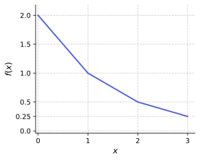

IAI · UET · VNU
Học máy
Mô hình phi tuyến
Bài 1 — Tham số hay Phi tham số?
- Bằng lời của riêng bạn, hãy mô tả sự khác nhau giữa phương pháp tham số và phương pháp phi tham số.
-
Với mỗi phương pháp dưới đây, hãy cho biết nó là tham số hay phi tham số và
giải thích lý do:
- LASSO
- Smoothing Splines
- Hồi quy cục bộ (Local Regression)
- Mô hình cộng tổng quát (GAM)
Bài 2 — Mô hình cộng tổng quát (GAM)
Trong mô hình cộng tổng quát (GAM), ta dự đoán biến mục tiêu \(Y \in \mathbb{R}\) từ các biến \(X_1, \ldots, X_p\) theo công thức: \[ g(Y) = \alpha + \sum_{j=1}^{p} f_j(X_j), \] với giả thiết \(\mathbb{E}[f_j(X_j)] = 0\) với mọi \(j\). Trong bài tập này, giả sử \(g = \mathrm{id}\) (hàm đồng nhất) và số chiều \(p = 2\).
- Không cần chứng minh: việc lặp thuật toán backfitting có cho kết quả trùng với một phương pháp nào bạn đã học không? Giải thích lý do.
- Trong điều kiện nào thì kết quả của thuật toán backfitting với toán tử làm mượt \(\mathcal{S}_\lambda\) phụ thuộc vào thứ tự cập nhật \(\hat{f}_j\)?
- Viết ra toán tử làm mượt \(\mathcal{S}_\lambda\) dựa trên cubic smoothing splines.
Bài 3 — Phụ thuộc tuyến tính
Xét ví dụ nhỏ với \(p = 2\) biến dự báo và \(n = 2\) mẫu. Giả sử \(x_{11} = x_{12}\) và \(x_{21} = x_{22}\). Hơn nữa, giả sử: \[ y_1 + y_2 = 0, \qquad x_{11} + x_{21} = 0, \qquad x_{12} + x_{22} = 0, \] sao cho ước lượng hệ số chặn trong mô hình bình phương tối thiểu là \(\hat{\beta}_0 = 0\).
- Nghiệm hồi quy tuyến tính \(\hat{\beta}\) trong trường hợp này là gì?
- Bạn nhận thấy vấn đề gì?
Bài 4 — Hồi quy đa thức & Spline
- Hồi quy đa thức tuyến tính theo nghĩa nào? Phi tuyến theo nghĩa nào?
- Cho tập hàm cơ sở \(\mathcal{B}_n = \bigl\{a_i x^i \mid a_i \in \mathbb{R}\bigr\}_{i=0}^{n}\) dùng cho hồi quy đa thức bậc \(n \in \mathbb{N}\). Hãy đưa ra 4 hàm không thể biểu diễn bằng \(\mathcal{B}_n\) và giải thích tại sao.
-
Xét Hình 1 dưới đây.

Hình 1: Hàm số cho Bài 4.3. - Xác định một spline với bậc phù hợp mô tả hàm trong Hình 1.
- Xác định một đa thức từng mảnh mô tả hàm trong Hình 1.
-
Trong bài giảng, ta định nghĩa cubic spline là hàm có dạng:
\[
f_L(x) = a + bx + cx^2 + dx^3 + e(x - \zeta)_+^3.
\]
Ngoài ra, cubic spline còn có thể được xây dựng bằng cách dùng đa thức bậc 3
định nghĩa từng mảnh với điều kiện tại nút đa thức liên tục khả vi hai lần.
Với định nghĩa này, cubic spline có dạng:
\[
f_I(x) = \begin{cases}
\alpha_1 + \beta_1 x + \gamma_1 x^2 + \delta_1 x^3 & x \le \zeta \\
\alpha_2 + \beta_2 x + \gamma_2 x^2 + \delta_2 x^3 & x > \zeta
\end{cases}.
\]
Chứng minh rằng cả hai cách biểu diễn đều biểu diễn cùng một không gian hàm —
tức là mỗi cách có thể chuyển đổi sang cách kia:
- Cho hàm \(f_L(x)\), xây dựng \(f_I(x)\) tương đương.
-
Cho hàm \(f_I(x)\), xây dựng \(f_L(x)\) tương đương.
Gợi ý: Khai thác việc \(f_I(x)\) liên tục khả vi hai lần, và \(f_L(x)\) có thể viết lại thành: \[ f_L(x) = \alpha_1 + \beta_1 x + \gamma_1 x^2 + \delta_1 x^3 + (\delta_2 - \delta_1)(x - \zeta)_+^3. \]
- Đưa ra một ví dụ hàm số mà ở đó yêu cầu liên tục gây ra vấn đề. Dùng đồ thị của hàm để lập luận tại sao điều này xảy ra.